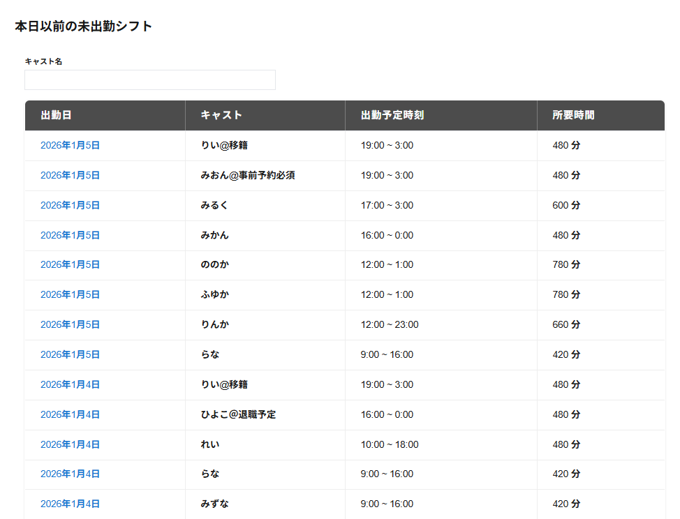

未完了スケジュールの本日以前の未出勤シフトには本日以前の未出勤のシフトの以下の項目が一覧で表示されます。
・キャスト名検索
入力した文字が含まれるキャストが一覧で表示されます。
・出勤日
未出勤のシフトの出勤開始予定の年月日が表示されます。
・キャスト
対象のシフトのキャスト名が表示されます。
・出勤予定時刻
未出勤のシフトの出勤の開始予定の時刻が表示されます。
・所要時刻
未出勤のシフトの所要時刻が表示されます。
対象のキャストの列をクリックするとシフト詳細が表示されます。
※本日以前の未出勤のシフトがない場合は本日以前の未出勤シフトが表示されません。
